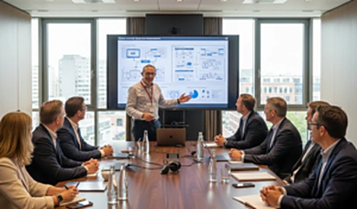

IT-architectuur die je strategie volgt. Niet andersom.
Je hebt geen junior nodig die alles nog moet leren. Je hebt iemand nodig die de situatie snel doorgrondt en direct waarde toevoegt. Dat is precies waar ik voor kom.
Herkenbaar?
Je organisatie heeft al IT-volwassenheid, maar loopt tegen grenzen aan. Schaalbaarheid. Governance. Strategische alignment tussen business en IT. Een groot consultancybureau stuurt een team dat eerst moet inwerken. Daar heb je de tijd niet voor.
"Ik begin niet bij de technologie, maar bij de mensen die ermee moeten werken. Een perfecte oplossing die niemand gebruikt, is geen oplossing."
Zo werk ik. Na 35 jaar in de IT, waarvan 22 jaar bij Shell in rollen van hands-on engineer tot Lead Architect, koos ik ervoor om zelfstandig verder te gaan. Niet om groter te worden, maar om dichter bij de inhoud te blijven. Ik kies opdrachten op complexiteit, niet op omvang van het bureau erachter.

Wat ik voor je doe
Geen vaste pakketten. De opdracht bepaalt de aanpak, van eerste strategie tot concrete oplossing.
Big-tech risicoanalyse
Hoe afhankelijk ben je van techbedrijven uit geopolitiek gevoelige regio's? Ik breng het risico in kaart en adviseer over Europese alternatieven.
Meer over deze dienst →Solution architecture
Cloud, data en integratieoplossingen. Van strategie tot ontwerp: bedrijfsbehoeften vertaald naar schaalbare, toekomstbestendige architectuur.
Data & IT-strategie
Strategisch advies over de richting van je IT-landschap, afgestemd op je bedrijfsdoelen.
Enterprise & domeinarchitectuur
Brede architectuurkaders voor grote organisaties met complexe IT-omgevingen.
Consultancy & interim architectuur
Direct inzetbaar bij projecten of ter overbrugging. Zonder overhead, snel op stoom.
Business Continuity Planning
Analyse en versterking van de continuïteit van je kritieke bedrijfsprocessen.
Waarom VSDA
Snel inzetbaar
Geen lange introductietrajecten en geen accountmanagers die eerst moeten schakelen. Je praat direct met de architect die het werk doet.
Strategisch én hands-on
Ik adviseer op strategisch niveau, maar heb ook een achtergrond als engineer. Ik kan meewerken aan de uitvoering, niet alleen aan het plaatje.
Geen overhead
Bij een groot bureau weet je pas wie je echt inhuurt als het te laat is. Bij mij weet je dat vooraf.
Duurzaamheid weegt mee
Ik kies opdrachten op inhoud en complexiteit, maar ook op impact. Organisaties die serieus nadenken over hun rol in de wereld hebben mijn voorkeur.
Vooral actief in energie en financiële dienstverlening
22+ jaar ervaring bij Shell en opdrachten in de financiële sector (banken, pensioenfondsen) vormen de basis. Maar complexe IT-vraagstukken komen in elke sector voor, en ik onboard snel in nieuwe omgevingen.
Klaar om kennis te maken?
Een kennismakingsgesprek is vrijblijvend. Geen verkooppraatje, gewoon een goed gesprek over wat er speelt.